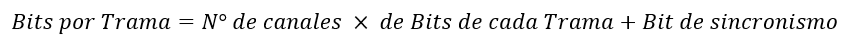
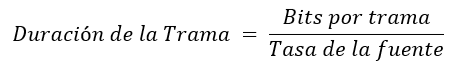
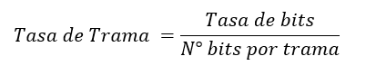
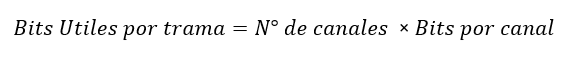
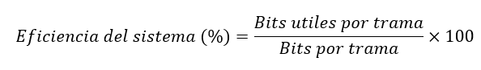

Calculadora de Multiplexación
Multiplexación TDM Sincrónica
¿Como obtuvimos estos resultados?
Para obtener los Bits por trama:
- Número de fuentes: El número de canales o fuentes que se multiplexan.
- Tamaño de muestra de cada fuente: Número de bits que aporta cada fuente por trama.
- Bits de control por trama (si los hay): Cualquier bit adicional usado para sincronización,
Debemos identificar:
Finalmente utilizamos la formula:
Para obtener la Duracion de la trama:
Es el tiempo que toma transmitir una única trama completa.
Utilizamos la formula:
Para obtener la Tasa de Transmisión:
Utilizamos la formula:

Para obtener la Tasa de Trama:
La tasa de trama es la cantidad de tramas que se transmiten por segundo.
Utilizamos la formula:
Para obtener los Bits utiles por trama:
¿Qué son los bits útiles por trama?
Los bits útiles por trama son los bits que contienen la información real que se transmite en una trama, excluyendo los bits adicionales de control, sincronización, o relleno.
Utilizamos la formula:
Para obtener la Eficiencia del sistema:
La eficiencia del sistema mide qué porcentaje de los bits transmitidos en una trama son realmente útiles (es decir, contienen información de las fuentes de datos) en lugar de ser utilizados para control, sincronización, o relleno.
Utilizamos la formula:
